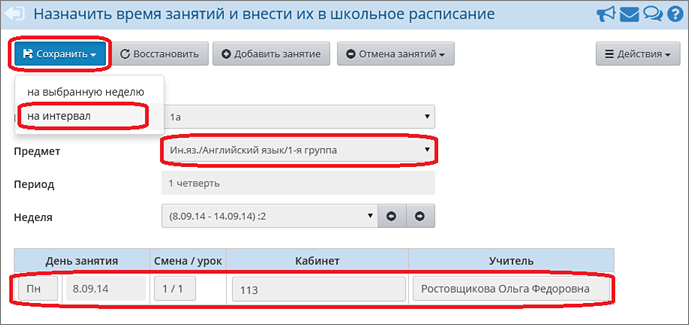
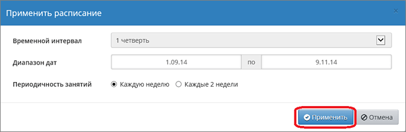
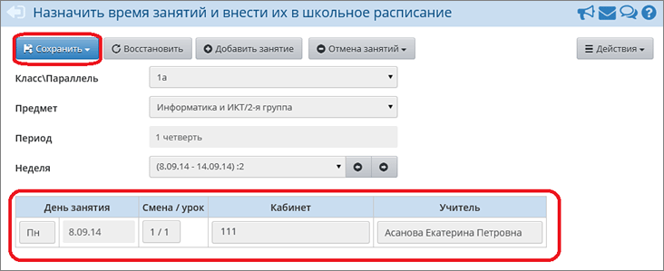

Примечание. Составлять расписание, по умолчанию, могут только пользователи с ролью завуча.
Из выпадающего списка "Класс" нужно выбрать конкретный класс, из списка "Предмет" выбрать предмет с конкретной подгруппой (например, сначала выбрана 1 подгруппа по предмету "Английский язык"), выбрать неделю и ввести уроки. После ввода уроков нужно применить данное расписание на конкретный интервал.


Пусть, например, в это же время занимается вторая подгруппа, у которой проходит предмет "Информатика и ИКТ".

При нажатии кнопки Сохранить система выдаст предупреждающее сообщение о пересечении уроков в данном классе. С предупреждением необходимо согласиться - после чего расписание для второй подгруппы будет создано.